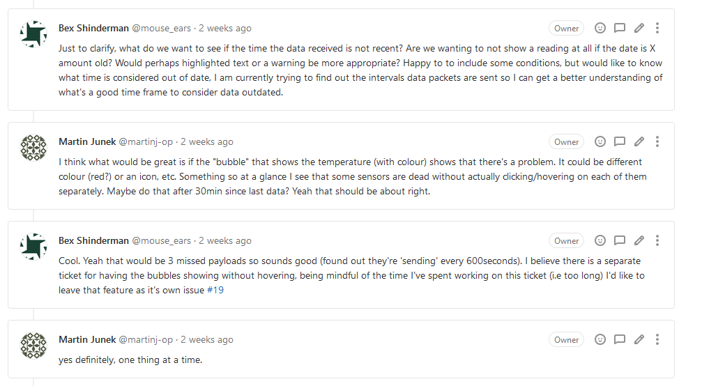
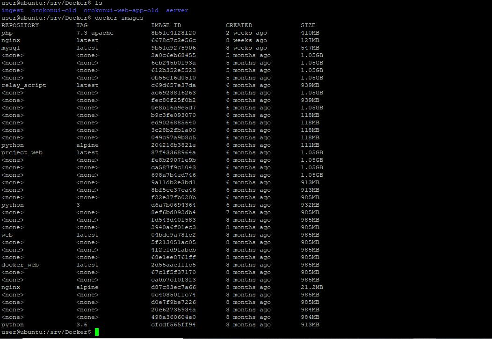

Sprint Three
Sprint 3 was a real mixed bag. Dealing with the frustration of being stuck on the same task really began to affect me - I ended up seeking help from our supervisor as I struggled over what seemed like such a simple task. The feature that I was stuck on was showing time data so users could easily determine the accuracy of the data. What set me back the most was understanding how data flowed from TTN (The Things Network), to our database and then to our webapp. I also struggled with time conversion, and learned the difference between how Python treats ISO time as opposed to epoch.
During this sprint I did manage to make a merge request for this feature, my code was met with a thorough code review and addressed issues such as code redundancy, accidental file deletion, a security leak (pastebin - rookie mistake), and most importantly that I was displaying & storing the datetime data as a string in an attempt to bypass conversion. During the process of my code review I did find the odd feature creeping in that was already it's own ticket or a little out of scope. This likely happened because the original ticket was not written explicitly enough. Pointing out that some features should be (or already were) was an exercise of confidence and has encouraged me to really question what it is a client is asking for. Interestingly this semester it seems our Project Manager is shadowing as our client for the room sensors application.
As I came into IOT hoping to work on backend & DevOps related projects, I have started to contribute to sysadmin tasks and began familiarizing myself with the server side of the Orokonui app. The first two things I immediately noticed was a) the git origin on the server was incorrect, it was still pulling from the OP GitLab even though we had migrated to gitlab.com, and b) there was absolutely no diskspace to the point I couldn't even tab. I made the corresponding tickets and did some diagnostic probing trying to find what was taking up the space. During a screen-sharing conference call the next day I was able to determine that there was over 20 gigabytes of unused docker images from the previous semester. Changing the git origin was an easy fix, I made sure to check the room-sensors server as well which unsurprisingly also had the wrong origin. It felt good to contribute to my teams success after a few stagnant weeks.
I am excited to work with more server-oriented issues in the coming sprints as this is where I feel my strengths are. Although the frustration of being stuck on the same ticket is weighing down on me, I acknowledge that this is the first time I am working with somebody else’s code. Even in Sprint 3 I am still discovering the layout of projects and how the devices are communicating with the TTN & web apps. In saying this, I am however worried about my contributions and need to allocate more time in future sprints into troubleshooting and keeping tabs on the project as a whole, not just what I’m working on.

